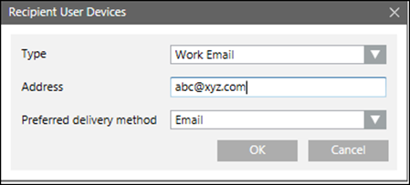

Configure Recipient User Devices
- You have added one or more users as Recipient Users
- In the Recipient User Devices dialog box, from the Type drop-down list, select Personal Email or Work Email as a recipient device for the corresponding recipient user.
- In the Address field, enter their email ID.
- The Preferred delivery method field is automatically populated with Email.

- Select Project > Field Networks > SMTP Field Network > Incoming Email Server.
- Select Configuration Properties.
- In the Login Id field of the incoming email server, enter the Login id of the email address configured in Reply To Email Address field of the SMTP email server.
NOTE: For domain specific email addresses, Login Id must be in the format DomainName\UserID. - Enter the password of the corresponding email account in the Password field of the Incoming Email Server.
- Create an incident template with acknowledgement settings configured and assign these users as recipients to the corresponding message template.
- Initiate Incidents
- Once the message template is launched, recipients of the message template should receive an email containing the content as described in the corresponding message template with an unique message ID and a link to reply to the corresponding message. If the recipient replies to the message, the acknowledgement status for the corresponding message will be displayed on the user interface under Browse > Message Status.